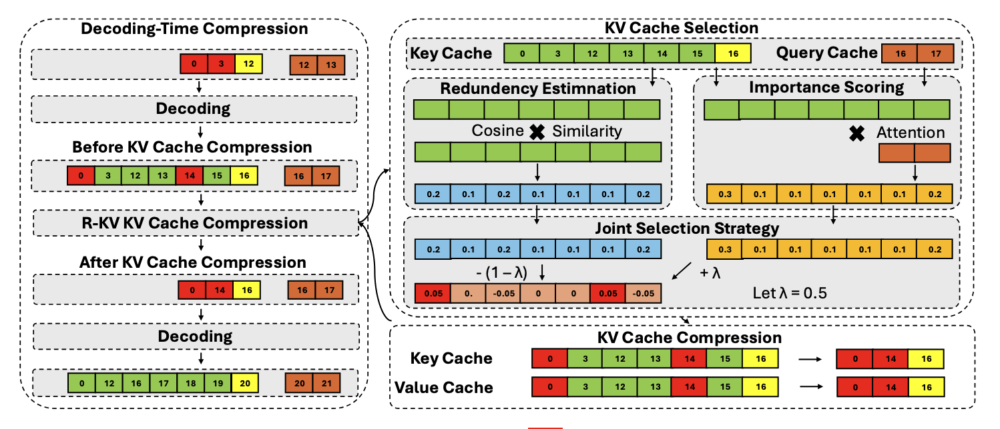
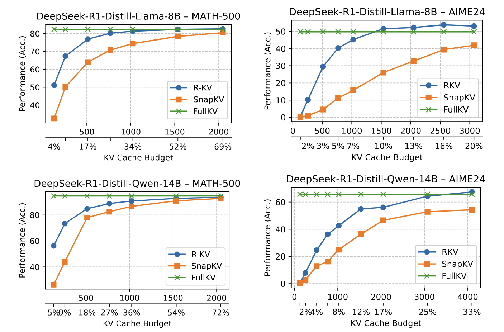
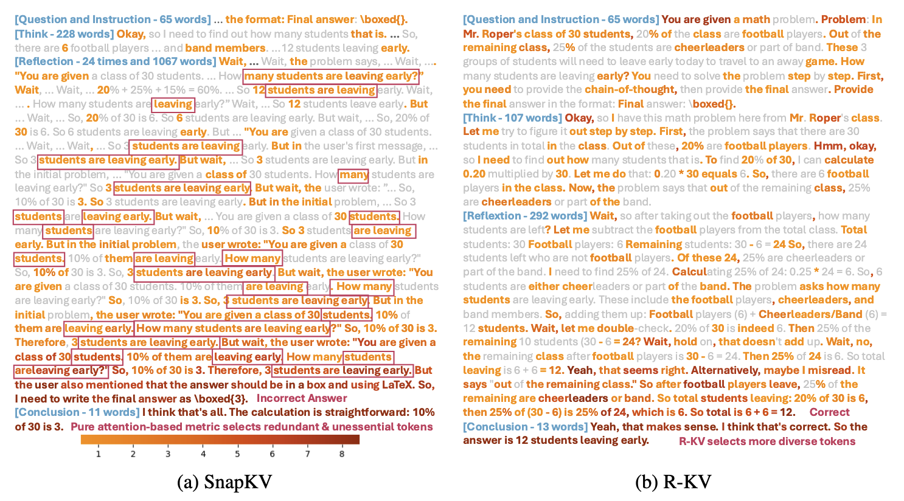

Large language models that rely on chain-of-thought (CoT) or self-reflection can crack tough reasoning tasks — but at the cost of very long outputs that bloat the key–value (KV) cache during inference. Traditional cache-compression schemes, tuned for long prompts, tumble on these generated traces, keeping only ≈60 % of the original accuracy when restricted to 10 % of the cache.
R-KV — Redundancy-aware KV-cache compression for Reasoning models — solves this by ranking tokens on-the-fly for both importance and non-redundancy, retaining only the informative, diverse ones.
| Metric | Full KV | R-KV (ours) |
|---|---|---|
| KV cache kept | 100 % | 10 % |
| Accuracy | 100 % | ≈100 % |
| Throughput ↑ | 1× | 6.6× |
| Memory saved ↓ | – | 90 % |
At 16 % cache, noise removal even nudges accuracy to 105 % of the full baseline.
Up to 90 % KV-cache memory savings with zero—sometimes negative—accuracy loss.
Plug-and-play: a lightweight wrapper for any autoregressive LLM.
Training-free: drop straight into inference or RL roll-outs—no finetuning required.
Chain-of-thought (CoT) and self-reflection unlock impressive reasoning, but they explode the KV cache. A single DeepSeek-R1-Distill-8B run on a tough math problem can:
Existing compression tools focus on long prompts and falter on long generations—often pruning the wrong tokens because redundant self-checks still attend heavily to themselves.
R-KV tackles redundant key/value (KV) tokens by compressing the KV cache on-the-fly while the model is decoding, keeping only tokens that are important and non-redundant.
| Part | What happens | Key idea |
|---|---|---|
| 1. Decoding-time KV staging | Newly generated tokens are written to a buffer B_buffer. | Separate buffer lets us decide what to keep after seeing a chunk of text. |
| 2. Importance scoring | Use attention weights from the last α observation tokens to score each candidate token. | High attention ⇒ token is critical for future predictions. |
| 3. Redundancy estimation | Compute cosine similarity between key vectors; older near-duplicates are marked redundant. | Keeps semantics while pruning repetition. |
| 4. Joint selection | Final score Z = λ·Importance − (1-λ)·Redundancy. Top-k tokens + observation tokens are retained in the budgeted cache. | One knob (λ) trades memory vs. quality. |
Our method surpassed baselines by a large margin in challenging math benchmarks, and surprisingly even outperformed full KV.
R-KV keeps two small, fixed-size buffers, so memory usage remains constant, unlike FullKV whose memory grows linearly:
| Buffer | Purpose | Shape |
|---|---|---|
| KV budget | Retained tokens | b × B_budget × L × H × d |
| KV buffer | Fresh tokens | b × B_buffer × L × H × d |
| Part | Complexity |
|---|---|
| Importance scoring | O(α × B_budget) |
| Redundancy scoring | O(B_budget²) |
| Attention (compressed) | O((B_budget + B_buffer) × B_buffer) |
| Attention (FullKV) | O(B_full × B_buffer) |
For long sequences (B_full ≫ B_budget), the tiny cache more than offsets scoring overhead.
The figure below shows which tokens are picked by R-KV and the pure-attention baseline SnapKV at the same decoding step.
Grey = not selected | Light orange → Dark red = selected tokens (deeper red = chosen by more attention heads)
By combining attention strength with redundancy filtering, R-KV retains the important context and removes noise, successfully completing the task.
If you find R-KV useful in your research, please cite us:
@misc{cai2025rkvredundancyawarekvcache,
title = {R-KV: Redundancy-aware KV Cache Compression for Training-Free Reasoning Models Acceleration},
author = {Zefan Cai and Wen Xiao and Hanshi Sun and Cheng Luo and Yikai Zhang and Ke Wan
and Yucheng Li and Yeyang Zhou and Li-Wen Chang and Jiuxiang Gu
and Zhen Dong and Anima Anandkumar and Abedelkadir Asi and Junjie Hu},
year = {2025},
eprint = {2505.24133},
archivePrefix= {arXiv},
primaryClass = {cs.CL},
url = {https://arxiv.org/abs/2505.24133}
}